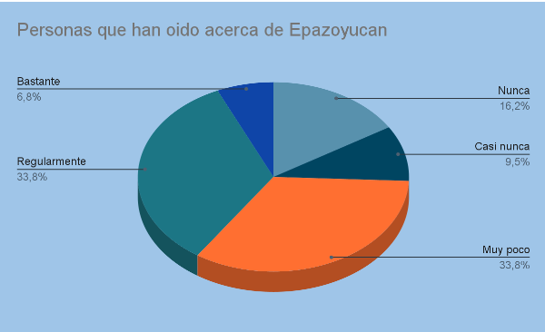
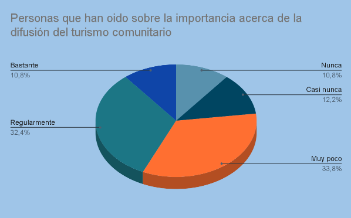
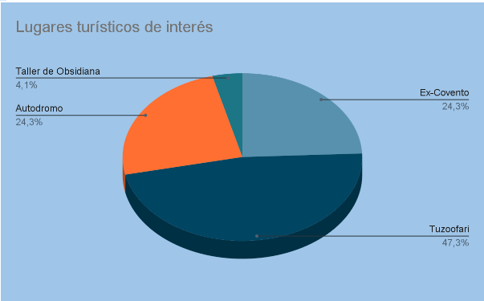

Gráficas
Resultados
Para complementar la elección del lugar realizamos una encuesta
a personas de entre 22 a 32 años de edad
sobre sus conocimientos acerca del lugar, de la cual se arrojaron los siguientes resultados:
Primer gráfica:

Segunda gráfica:

Tercer gráfica:

Aqui hay un video, pero tu navegador no lo soporta :C
PORTADA
PÁGINA 2
PÁGINA 3
PÁGINA 4
PÁGINA 5